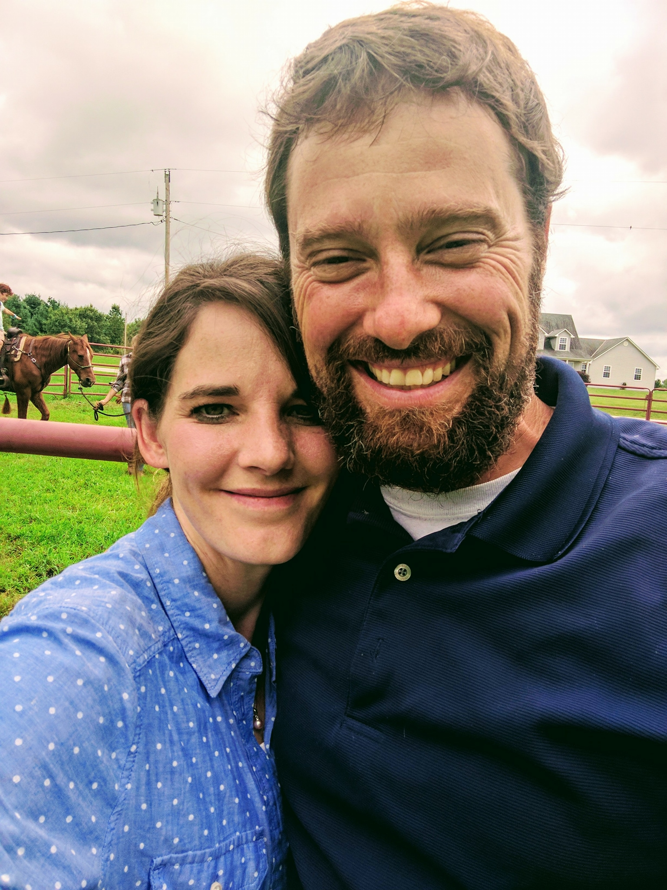
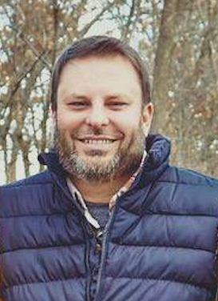
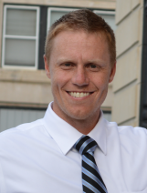

Our Story
Throughout our journey serving with Carry The Cross Ministries our family has kept a dream in our hearts. Our dream has been to start a farm, where children who are orphaned, at-risk, or in foster care would have a safe and loving family to call home. A farm where families that have been broken or stained by the craziness of life, could come to find hope and restoration. A farm, where whomever needed a moment of peace, hope, joy and love; could come and find it. Over the years God has shaped, molded and trained our family in ways that would fit perfectly into this picture. Thanks to Him we have experienced community living to its fullest with numerous families staying with us, much of the time having ten or more children in our building at a time. We have learned farming through tilling up our land and planting community gardens. We have been a place of hope and restoration, for those who came to stay or in the neighborhood who have had no hope. We have run a program where we took at risk youth to a farm to learn how to care for and ride horses. We were even blessed with an opportunity to foster a young girl from the neighborhood whose family went through a period of brokenness.
As we began to research the need, we found In Kansas the number of children needing out of home care has increased from 5,852 in 2011 to 7,233 children in 2015. In Missouri, the number has skyrocketed from 9220 to almost 13,000 today. What stands out even more is that there were over 2,300 children in Kansas and 2,500 in Missouri that were without permanent homes. Our hearts were broken as we dug deeper into those numbers. The desire to do something to help was overwhelming. Our hope and prayer is that On Eagles Wings Farm would be a place of refuge, restoration and renewal and reintegration! It will be a fully functioning, nearly self-sustainable farm complete with small-scale animals and crops, where children who are enduring hardships in life can come and visit or live in a Christ-centered family environment where they will be surrounded by love, encouragement, grace based discipline, intensive-family counseling and Christian morals and principals. Children who come to stay for long or short term will have full interaction with the farm environment.
Staff and Administration
Jason Neland
The Executive Director of On Eagles Wings Farm is Jason Neland. Jason is a graduate of Avila University with a BS in Natural Science/Biology and certification as a Secondary Teacher. He is the co-founder of CTC and Director of The Firehouse in Kansas City, Kansas. Jason will draw on his experience in many different walks of life to help guide him in transitioning to On Eagles Wings Farm. He spent eight years as a youth and associate pastor, five years as a juvenile intake counselor working with at-risk and foster children, and the past ten years have been spent in the Kansas City, KS public school system working as a teacher, mentor, and athletic coach for middle school football and high school baseball. Jason’s wife of fourteen years, Courtney, has also led a full life of serving her home, church and community. She has served many years as a volunteer in youth ministries, worked as a Children’s Director at a church, has run a daycare out of her home and been a stay at home mom for not only her five children but for the many Firehouse and neighborhood children who have called their house a home. Jason and Courtney, have devoted their lives to investing in urban children and families for the past twelve years. One of their highlights during this time was running a mentorship program for young men who had been arrested or runaway from home. They brought them out to a farm each week to learn how to ride and care for horses and how to do work around the farm. Their eyes were opened at this time as to how well “hardened” youth would respond to this new environment that they were in. This is when the dream of having their own farm began to start taking shape.
Board of Directors
Steve Reed
Chief Executive Officer for Daybreak International, a missions organization dedicated to initiating and developing friendships among the marginalized and forgotten peoples of the Americas in order to encourage and promote transformational relationships with Jesus and multiplying faith communities.
Joe Graham
Joe Graham is a principal at John Fiske Elementary School in Kansas City, Kansas. He has twenty years of experience as an urban educator and mentor, working in both elementary and secondary settings. Over the years, Joe has developed a deep appreciation for his students and the communities from which they come, for he believes his students have taught him enduring lessons about life, and in particular change and resiliency. He hopes to build relationships with others who advocate to meet the needs of all students. Joe has been married to Becky for twenty years, and they have three children: Oscar, Nell, and Sawyer. Becky also works as a middle school teacher. Joe and Becky love to travel with the kids, so the family not only creates memories but also new learning experiences. Ultimately, Becky and Joe want these learning experiences to help the kids develop a deeper understanding of Jesus and who they are in Him.
Scott Walden
Scott Walden is a loving father of seven amazing children. His previous board experience includes serving on the school board for Muncie Christian School in Kansas City, KS, the school board for Midwest Parent Educators in Overland Park, KS and on the board of Carry The Cross Ministries in Kansas City, KS. He currently works as a sales manager for Cobb Refrigeration in Kansas City. He has formerly worked as the Manager of Engineering for Block and Co. in Kansas City and has been an adjunct professor teaching hvac classes at Johnson County Community College. Scott has volunteered his time over the years as a foster parent, a Sunday school teacher and a middle and high school jv and varsity basketball head coach. He currently volunteers at a local elementary school where he mentors and builds relationships with the students there.
Justin Powell
Justin Powell is a foster and adoptive father who recently moved back to his hometown of Newton, Kansas. He has an undergraduate degree in visual communications and a MA of interaction design. He currently works as a Senior Experience Software Designer for DST Systems in Kansas City, MO. God has blessed his work and allows him the freedom to design software remotely - his most recent work being based in London, England. Justin uses his gifts and talents in numerous ways serving nonprofits and ministries throughout the world. He has designed fundraising tools, web sites, applications, and brand identity systems. Justin and his wife of 15 years, Jessica, work to support healthy marriages, families, and relationships within their church and community. They have also logged over 10 years of experience volunteering with Big Brothers and Big Sisters. He enjoys CrossFit, soccer, and the unconventional hobby of riding BMX bikes.
Mary Cobb

Mary Cobb is the Vice President at Cobb Refrigeration Heating and Cooling where for the past fourteen years she has helped run the business with her husband of 41 years Bill. Before working at Cobb, Mary served twenty years in school and corporate food service, managing anywhere from four to twenty employees. During this time she was also a ServSafe Area trainer.
Dr. Justin Hoskins
Dr. Justin Hoskins is a pediatrician in Chicago, Illinois. He received his medical degree from University of Kansas School of Medicine and has been in practice between 3-5 years. He currently serves at Comer Children’s Hospital in Chicago. He is the co-founder of Carry The Cross Ministries in Kansas City, KS.